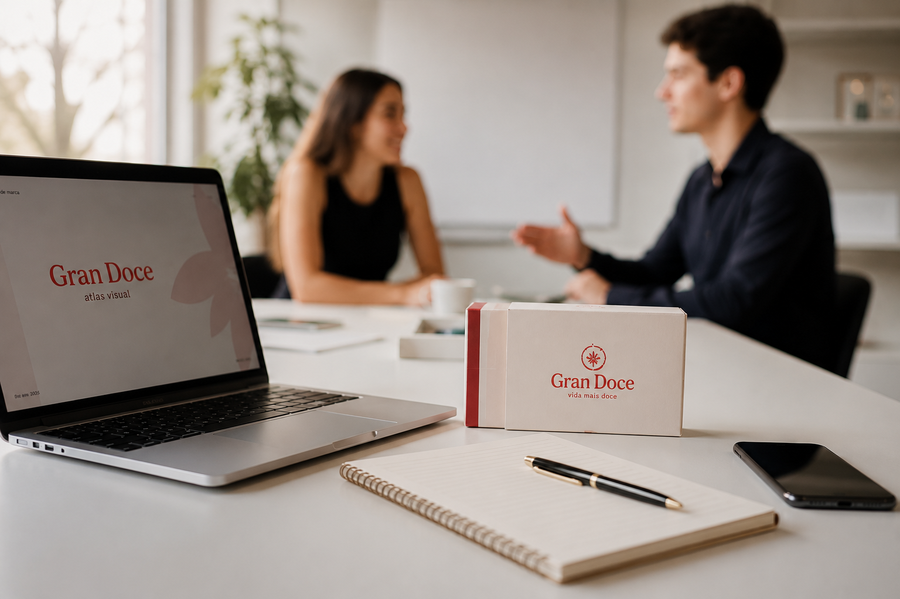
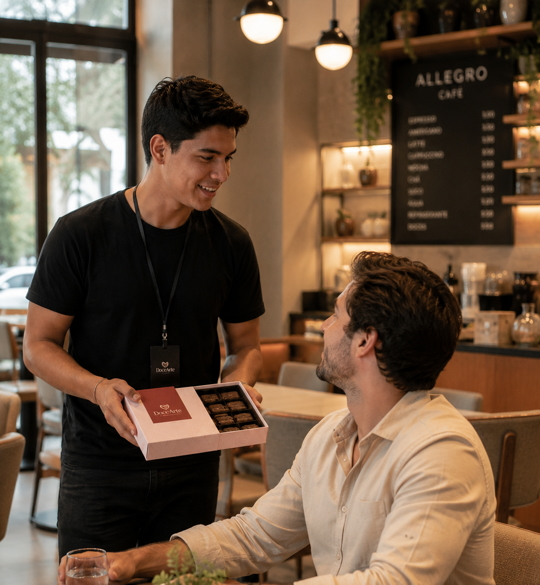

O QUE NOS TORNA DIFERENTE?
Acreditamos que oportunidades devem ser conquistadas pelo valor que uma pessoa entrega. Não medimos potencial pelo tempo de empresa, mas pela capacidade de aprender, assumir responsabilidades e gerar resultados.
Na Gran Doce, mais do que produzir doces, construímos um lugar onde as pessoas evoluem através da prática, da responsabilidade e do mérito.
PARTICIPAR DO PROCESSO SELETIVO
Entende que o crescimento é resultado do próprio empenho. Assume responsabilidade e aprende com cada desafio.
Entrega o que promete e busca melhorar constantemente. Age com autonomia e gera impacto real.
Enxerga feedback como oportunidade de crescimento e constrói uma trajetória própria através do mérito.
E como podemos desenvolver você
Aprenda na prática, acompanhado por pessoas experientes desde o primeiro dia.
Receba orientações frequentes para corrigir erros, acelerar seu aprendizado e evoluir continuamente.
Novas oportunidades são conquistadas pelo valor entregue, e não pelo tempo de empresa.
Acreditamos que oportunidades devem ser conquistadas pelo valor que uma pessoa entrega. Não medimos potencial pelo tempo de empresa, mas pela capacidade de aprender, assumir responsabilidades e gerar resultados.

Mais do que uma oportunidade de trabalho.
Aqui, o trabalho é um ambiente para desenvolver habilidades, assumir responsabilidades e construir uma trajetória própria através da prática e do mérito contínuo.
Não. O mais importante é ter vontade de aprender, assumir responsabilidades e evoluir continuamente.
A remuneração acompanha o valor que você entrega. Reconhecemos crescimento, atitude e resultado.
Basta preencher o formulário de candidatura. Os candidatos selecionados serão convidados para uma conversa.
Estamos em busca de pessoas comprometidas, responsáveis e dispostas a evoluir continuamente.
Se você acredita que esse ambiente combina com quem você deseja se tornar, queremos conhecer a sua história.
PARTICIPAR DO PROCESSO SELETIVO1 de 8